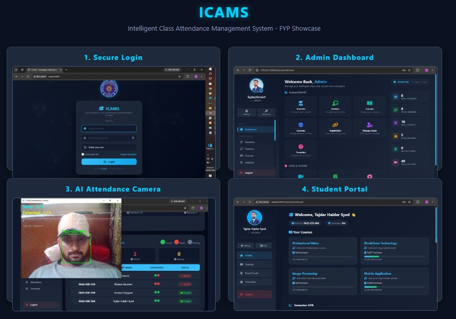
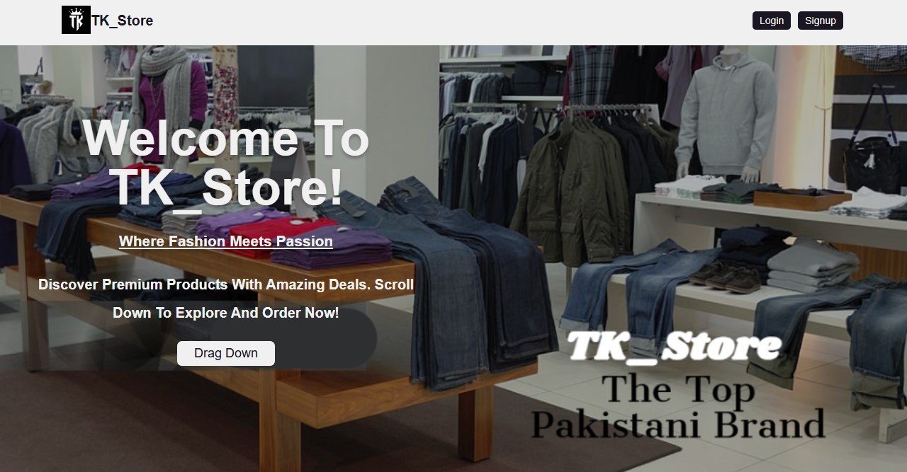
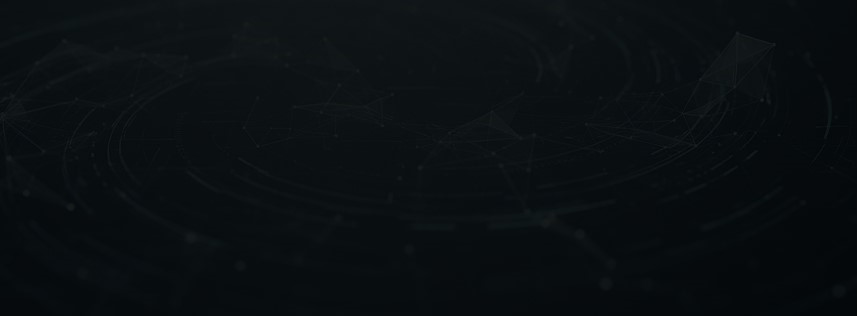
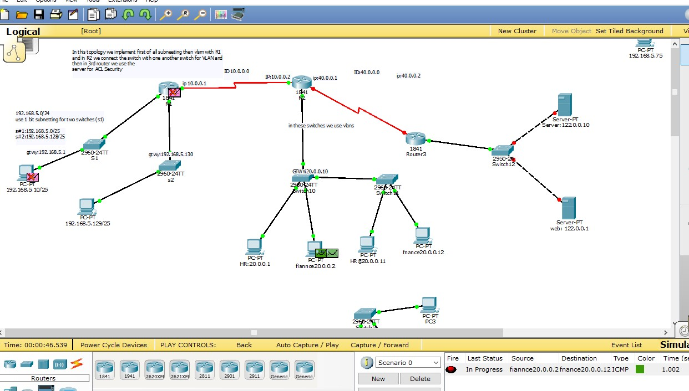

Showcasing my academic, personal, and internship projects

An intelligent classroom attendance management system using Face Recognition. It automatically marks attendance in real-time, tracks student presence, and eliminates proxy attendance completely.

A fully functional e-commerce platform with cart system, admin dashboard, and payment processing.

My personal portfolio website showcasing my skills, projects, and experience with modern UI.

Configured routers and switches using Cisco Packet Tracer. Implemented routing protocols and network security.